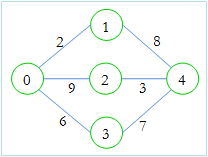

I am going to my home. There are many cities and many bi-directional roads between them. The cities are numbered from 0 to n-1 and each road has a cost. There are m roads. You are given the number of my city t where I belong. Now from each city you have to find the minimum cost to go to my city. The cost is defined by the cost of the maximum road you have used to go to my city.

For example, in the above picture, if we want to go from 0 to 4, then we can choose
1) 0 - 1 - 4 which costs 8, as 8 (1 - 4) is the maximum road we used
2) 0 - 2 - 4 which costs 9, as 9 (0 - 2) is the maximum road we used
3) 0 - 3 - 4 which costs 7, as 7 (3 - 4) is the maximum road we used
So, our result is 7, as we can use 0 - 3 - 4.
#include <bits/stdc++.h>
using namespace std;
int mat[510][510];
int main ()
{
int cas=1;
int t;
scanf("%d",&t);
while (t--){
memset(mat,-1,sizeof(mat));
char foo;
scanf("%c",foo);
int n,m,i,j;
scanf("%d %d",&n,&m);
int visited[n];
int cost[n];
for (i=0;i<n;i++){
cost[i]=999999;
visited[i]=0;
}
while (m--){
int u,v,w;
scanf("%d %d %d",&u,&v,&w);
if (mat[u][v]==-1)
mat[u][v]=mat[v][u]=w;
else if (mat[u][v]>w)
mat[u][v]=mat[v][u]=w;
}
int h;
scanf("%d",&h);
priority_queue < pair<int,int> , vector< pair<int,int> > , greater< pair<int,int> > > q; //min_heap priority queue
q.push(make_pair(0,h)); //
cost[h]=0;
//visited[h]=1;
while (!q.empty()){
pair<int,int> po=q.top();
q.pop();
int ve=po.second,co=po.first;
if (visited[ve])
continue;
visited[ve]=1;
for (i=0;i<n;i++){
if (mat[ve][i]>0 && visited[i]==0){
/*if (cost[ve]<mat[ve][i] && mat[ve][i]<cost[i])
cost[i]=mat[ve][i];
else if (mat[ve][i]<cost[ve] && cost[ve]<cost[i])
cost[i]=cost[ve];*/
cost[i]=min(cost[i],max(cost[ve],mat[ve][i]));
q.push(make_pair(cost[i],i));
}
}
}
cout<<"Case "<<cas++<<":"<<endl;
for (i=0;i<n;i++){
if (cost[i]!=999999)
cout<<cost[i]<<endl;
else
cout<<"Impossible"<<endl;
}
}
return 0;
}